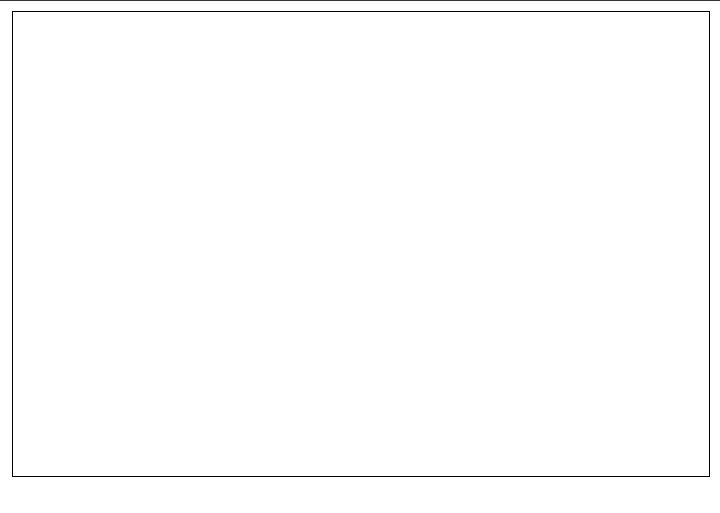
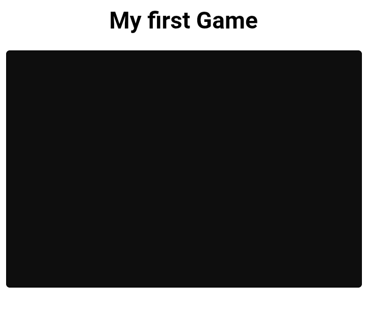
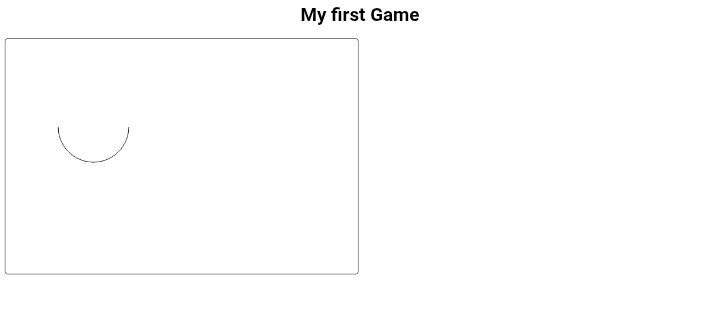
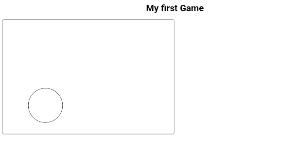
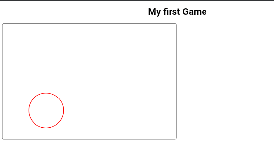
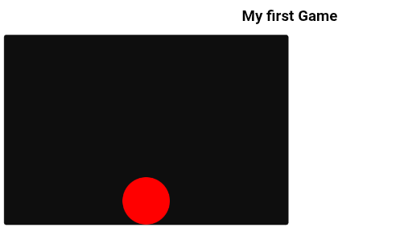

# Getting Started
Introduction
This guide is your gateway to mastering game development with JavaScript. Whether you're a beginner or an experienced developer, you'll find valuable insights and practical tips to enhance your skills.
JavaScript is a versatile language that powers many web applications, and its capabilities extend to game development. With the right tools and knowledge, you can create engaging and interactive games that run seamlessly in web browsers.
Throughout this guide, we'll explore various aspects of game development, including setting up your development environment, understanding core concepts, and implementing advanced techniques. By the end of this journey, you'll be equipped to create your own web-based games using JavaScript.
Requirements
Before diving into game development with JavaScript, it's essential to ensure you have the necessary tools and resources. Here's a list of requirements to get you started:
- Text Editor or IDE: Choose a code editor that suits your preferences. Popular options include Visual Studio Code, Sublime Text, and WebStorm.
- Web Browser: A modern web browser (e.g., Chrome, Firefox, Edge) is essential for testing and running your games.
- Basic Knowledge of JavaScript: Familiarity with JavaScript fundamentals is crucial. If you're new to JavaScript, or just want to refresh consider taking the introductory course first, note it it recommended as a full JavaScript course.
- Knowledge of HTML and CSS: Understanding HTML and CSS will help you structure and style your game elements effectively.
Setting Up
Setting up your development environment is the first step toward creating games with JavaScript. Follow these steps to get started:
- Install a Text Editor or IDE: Download and install your preferred code editor or IDE. Configure it with extensions or plugins that enhance JavaScript development.
- Create a Project Folder: Set up a dedicated folder for your game development projects. This will help you stay organized.
- Test Your Setup: Create a simple HTML file that includes a JavaScript script tag. Open it in your web browser to ensure everything is working correctly.
# JavaScript Basics
JavaScript is a programming language for tge web. it can be used to create interactive elements or simply make the webpage interactive. websites and game developer use it to handle events like making a dropdown menu, handling a button click and much more.
Variables and Data Types
In JavaScript, variables are used to store data values. You can
declare a variable using the var, let, or
const keywords. JavaScript supports various data types,
including:
- String: Represents text (e.g., "Hello, World!")
- Number: Represents numeric values (e.g., 42, 3.14)
- Boolean: Represents true or false values
- Array: Represents a collection of values
- Object: Represents a collection of key-value pairs
// Example of variable declaration
let playerName = "Hero";
const maxScore = 100;
let isGameOver = false;
Operators and Expressions
Operators are symbols that perform operations on variables and values. JavaScript includes various types of operators, such as:
- Arithmetic Operators: +, -, *, /, %
- Assignment Operators: =, +=, -=, *=, /=
- Comparison Operators: ==, ===, !=, !==, >, <, >=, <=
- Logical Operators: &&, ||, !
Here are all the operators and examples of their usage:
| Operator | Description | Example |
|---|---|---|
| + | Addition | 5 + 3 // 8 |
| - | Subtraction | 5 - 3 // 2 |
| * | Multiplication | 5 * 3 // 15 |
| / | Division | 6 / 3 // 2 |
| % | Modulus | 5 % 2 // 1 |
| = | Assignment | x = 5 |
| += | Addition Assignment | x += 3 // x = x + 3 |
| -= | Subtraction Assignment | x -= 2 // x = x - 2 |
| *= | Multiplication Assignment | x *= 4 // x = x * 4 |
| /= | Division Assignment | x /= 2 // x = x / 2 |
| == | Equality | 5 == '5' // true |
| === | Strict Equality | 5 === '5' // false |
| != | Inequality | 5 != 3 // true |
| !== | Strict Inequality | 5 !== '5' // true |
| > | Greater Than | 5 > 3 // true |
| < | Less Than | 3 < 5 // true |
| >= | Greater Than or Equal To | 5 >= 5 // true |
| <= | Less Than or Equal To | 3 <= 5 // true |
| && | Logical AND | true && false // false |
| || | Logical OR | true || false // true |
| ! | Logical NOT | !true // false |
Functions, Scope and Parameters
Functions are reusable blocks of code that perform specific tasks.
So instead of writing the same code multiple times, you can define a
function and call it whenever needed.
You define a function using the function keyword, followed by the
function name and parentheses then a curly brace block, which contains the code to be executed.
example:
// Example of function declaration
function greet() {
console.log("Welcome to the game!");
}
Functions can also accept parameters, which are values passed into the function when it is called. Parameters allow you to customize the behavior of the function based on the input provided.
// Example of function with parameters
function greet(name) {
console.log("Welcome to the game, " + name + "!");
}
Scope refers to the visibility and accessibility of variables and
functions within different parts of your code. JavaScript has two
main types of scope: global scope and local scope. Variables
declared outside of any function have global scope and can be
accessed from anywhere in your code. Variables declared within a
function have local scope and can only be accessed within that
function.
example:
const name = "John"
function greet() {
const user = "Alice"
}
console.log(user) // Error: user is not defined
In this example, the variable name has global scope and
can be accessed from anywhere in the code. However, the variable
user has local scope and can only be accessed within the
greet function. Attempting to access user outside
of the function will result in an error.
Control Structures (Decision making)
Control structures allow you to control the flow of your code based on certain conditions. The most common control structures in JavaScript are conditional statements and loops.
-
Conditional Statements: These statements allow
you to execute different blocks of code based on specific
conditions. The most commonly used conditional statements are
if,else if, andelse. If statement evaluates a condition, and if it is true, the code block inside the if statement is executed. Example:const age = 18; if (age > 18) { console.log("You are an adult."); }The else if statement allows you to check multiple conditions in sequence. If the first condition is false, the next condition is evaluated, and so on. Example:const age = 18; if (age < 13) { console.log("You are a child."); } else if (age >= 13 && age < 18) { console.log("You are a teenager."); } else { console.log("You are an adult."); } -
Loops: Loops allow you to repeat a block of
code multiple times. The most commonly used loops in JavaScript
are
for,while, anddo...while.
The for loop is used when you know the number of iterations in
advance. It consists of three parts: initialization, condition,
and increment/decrement.
syntax: for (Initialization; condition; increment/decrement ) { // code to be executed } Example:
for (let i = 0; i < 5; i++) {
console.log("Iteration: " + i);
}
The while loop is used when you want to repeat a block of code as long as a specific condition is true. Example:
let count = 0;
while (count < 5) {
console.log("Count: " + count);
count++;
}
The do...while loop is similar to the while loop, but it guarantees that the code block will be executed at least once, even if the condition is false. Example:
let count = 0;
do {
console.log("Count: " + count);
count++;
} while (count < 5);
# Handling Events
Events are actions or occurrences that happen in the browser, such as a user clicking a button, moving the mouse, or pressing a key. In JavaScript, you can handle these events using event listeners.
Event Listeners
Event listeners are functions that are executed when a specific
event occurs. You can attach event listeners to HTML elements using
the addEventListener method.
In order to handle an event in javascript, you first need to select the HTML element you want to attach the event listener to. You can do this using methods like getElementById, querySelector, or getElementsByClassName.
These methods return a reference to the HTML element, which you can then use to attach an event listener.
Example:
// get the button element by its ID and store it in button variable
const button = document.getElementById("myButton");
// attach a click event listener to the button
button.addEventListener("click", function() {
alert("Button clicked!");
});
In this example, we first select a button element with the ID
"myButton" using getElementById. Then, we attach a
click event listener to the button using addEventListener.
When the button is clicked, an alert message will be displayed.
note , syntax of addEventListener is:
element.addEventListener(event, function);
Common Events
There are way to many events you can listen for in JavaScript, You probably don't want to memorize them all, but here are some of the most common events you'll always encounter:
| Event | Description |
|---|---|
| click | Triggered when an element is clicked |
| mouseover | Triggered when the mouse pointer is moved over an element |
| mouseout | Triggered when the mouse pointer is moved out of an element |
| keydown | Triggered when a key is pressed down |
| keyup | Triggered when a key is released |
| load | Triggered when the page has finished loading |
These are just a few examples of common events well be using. If you want to learn more about events, you can check the MDN web docs on JavaScript Events and find one you want to use in your game development projects.
Event Object
When an event occurs, an event object is created that contains information about the event. This object is automatically passed to the event listener function as a parameter. You can use this object to access details about the event, such as the target element, mouse coordinates, and more.
// Example of using the event object
button.addEventListener("click", function(event) {
console.log("Button clicked at coordinates: " + event.clientX + ", " + event.clientY);
});
In this example, the event listener function takes an event parameter. Inside the function,
we access the clientX and clientY properties of the event object to get the mouse coordinates when the button is clicked.
Now to get all the list of event properties you can access from an object, you'll do console.log(event) inside your event listener function and check the console for all the available properties...
button.addEventListener("click", function(event) {
console.log(event);
});
this will give you a full list of properties and methods available on the event object.
# Working with Canvas
The HTML5 <canvas> element is a powerful tool for
creating graphics and animations in web applications. It provides a
drawable area that you can manipulate using JavaScript, making it
ideal for game development.
HTML5 Canvas
We have learned all the basics needed , so now we can start having fun and making games!
In order to make a game, we first need to learn how to draw on the web.
To draw shapes and animation for our game, we'll use the <canvas> tag.
It became available in HTML5, allowing you .to draw on it using pure javaScript, it acts like a drawing board.
Lets start by setting up basic Canvas
<!DOCTYPE html>
<html lang="en">
<head>
<meta charset="UTF-8">
<meta name="viewport" content="width=device-width, initial-scale=1.0">
<title>My Game</title>.
</head>
<body>
<!-- Draw the canvas element with the canvas tag -->
<canvas id="canvas" width="600" height="400"> your browser does not html5 canvas </canvas>
</body>
</html>.
We have set the width and height of the canvas, defining the size of the canvas.
Note: The text inside the <canvas> tag is displayed only if the browser does not support the canvas element.
We set a width and height to our canvas, but how will it work on different screen sizes?
We can scale our canvas to fit the screen size by adding css. We'll use external css which you can link to your html by adding <link rel="stylesheet" href="style.css"> inside the <head> tag. Just make sure your css file is in the same folder as your html
To scale our canvas to fit the screen size, we can use the following css code:
#canvas {
width: 100%;
border: 1px solid black;
}
e
We should now be able to see our canvas scaled to fit the screen size with a black border around it.
Congratulations 🎉! You have successfully set up a basic HTML5 canvas for your game development projects.
But how do we draw on a canvas if it scales based on the screen size which can differ for different users?
Drawing on a canvas is done using coordinates.
The top-left corner of the canvas is the origin point (0, 0). The x-coordinate increases as you move to the right, and the y-coordinate increases as you move down.
All the drawing will be done within that coordinate space irrespective of the actual size of the canvas.
Task--
- Add a canvas to your page with size 600x400
- Make it scale 100% width using CSS and assign it a black background
- Round the edges a bit
It should be like this:
Drawing Shapes
it's time to do some drawing
we'll also be using external js, link it to your html by adding <script src="script.js"></script>
Next we need to get the canvas reference in js
// get the canvas element with the id 'canvas' and save it in the canvas variable name
const canvas = document.getElementById('canvas')
To access the drawing functions we need to define the context of the 2d canvas
const context = canvas.getContext('2d')
The canvas context is an object with properties and functions that you can use to draw inside the canvas element.
To make sure that the canvas is loaded before taking it reference, it is a common practice to use onload event of the window which runs when the window have finished loading
window.onload = function() {
const canvas = document.getElementById('canvas')
const context = canvas.getContext('2d') // a 2d scene to work with
};
Now when we have the context of our canvas, we can start drawing!
The first shape we're going to draw is a line.
For that we will use the following functions: moveTo(), lineTo() and stroke().
moveTo(): defines the coordinate position of the drawer|cursor (x, y)lineTo(): defines the coordinate of the end of our line (x, y)stroke(): draws the line ( tells the canvas to render the line )
For example:
<!-- HTML -->
<canvas id='canvas' width='600' height='400'>Your browser does not support html5 canvas<canvas>
// JAVASCRIPT
window.onload() = function() {
const canvas = document.getElementById('canvas');
const context = canvas.getContext('2d');
context.moveTo(50, 100);
context.lineTo(400, 200)
context.stroke()
}
this will draw a line from point (50, 100) to point (400, 200)
Remember the size of our canvas is 600x400. This means that the upper left corner has the coordinates (0, 0), while the lower right corner (600, 400).
Rectangles and Circles
Rectangles
Drawing a rectangle is done using the rect() function, which has the following syntax context.rect(x, y, width, height).
x and y are the starting coordinates, they will represent the upper left corner of the rectangle.
Lets draw a rectangle from the point (50, 50) with the size (200, 100)
window.onload() = function() {
const canvas = document.getElementById('canvas');
const context = canvas.getContext('2d');
context.rect(50, 50, 200, 100)
context.stroke()
}
Similar to drawing a line, we need to call the stroke() function to draw the rectangle.
Arc
To draw a circle we first need to arc() function, it has the following syntax:
context.arc(centerX, centerY, radius, startingAngle, endingAngle, counterClockwise).
centerX and centerY represents the center of the arc.
Radius is the size of the arc.
startingAngle and endingAngle represents the start and end of the arc in radians. Like when drawing a circle, where you start or stop, canvas always start from the right:
top
|
left ----O---- RIGHT ← starts here
|
bottom
The last parameter is optional and specifies whether the drawing should be counterClockwise or clockwise.
The default value is false meaning the drawing is done clockwise
Radians
The angles used in arc() are measured in radians.
A radian is a unit of measurement for angles, just like degrees. It is based on the geometry of a circle.
Instead of dividing a circle into 360 degrees, radians measure angles based on how far around the circle you go.
Key relationships:
- 180° = π radians
- 360° = 2π radians (a full circle)
PI (π) is a mathematical constant approximately equal to 3.14159.
Canvas expects angles to be given as numbers measured in radians.
Drawing an arc
Lets draw an arc that is centered at the point (150, 150), with radius (60) and starts from angle 0 and spans to angle 180 ( which is eual to PI )
window.onload() = function() {
const canvas = document.getElementById('canvas');
const context = canvas.getContext('2d');
context.arc(150, 150, 60, 0, Math.PI)
context.stroke()
}

Math.PI is used to access the value of PI constsnt.
Noticed that ?, Math.PI(3.14159) is 180⁰ which is half of the circle, Math.PI * 2 will then be ✨.
Drawing a Circle
Now that we know how to make an arc, we can make a full circle, Just my multipling the PI by two it is then 360⁰ (a full circle)
window.onload() = function() {
const canvas = document.getElementById('canvas');
const context = canvas.getContext('2d');
context.arc(150, 300, 60, 0, Math.PI * 2)
context.stroke()
}
We get: 
Applying Styles & Colors
All the shapes we draw only have a thin black outline.
That's the default style of the stroke() function.
We can set the color and the width of the stroke using the strokeStyle and lineWidth properties.
For example:
window.onload = function() {
const canvas = document.getElementById('canvas')
const context = canvas.getContext('2d')
context.arc(150, 300, 60, 0, Math.PI * 2)
context.strokeStyle = 'red' // set the outline color to red
context.lineWidth = 2 // make the line 2 px thick
context.stroke()
}

To add a fill color to our shapes, we need to use the fillStyle() function.
For example lets paint our circle green
window.onload = function() {
const canvas = document.getElementById('canvas')
const context = canvas.getContext('2d')
context.arc(150, 300, 60, 0, Math.PI * 2)
context.fillStyle = 'green'
context.fill() // show the color
}
Similar to the the stroke() we need to call the fill() to fill the shape with the specified color.
it is recommended to use the fill() function before the stroke() function in order to remember the stroke correctly.
We specified colors using their names, the fillStyle() and strokeStyle functions can also accept color names as Hex.
A
hexadecimal color is specified as #RRGGBB, where RR(red), GG(green) BB(blue) are hexadecimal integers between 00 and FF specifing the intencity of the colors.
For example #FF0000 is displayed as red, because the red component is set to it's highest value (FF) and others are set to 00.
note!: Drawing multiple shapes
In events we need to draw multiple shape, we need to use the beginPath() before each shape. It tells the canvas to stop connecting to old drawings and start a new shape.
Think of it like this:
Imagine drawing with a pen on a paper
lifting the pen = beginPath()
Drawing without lifting = everything connects. Example:
without beginPath():
context.moveTo(50, 50);
context.lineTo(150, 50);
context.stroke();
context.arc(200, 50, 30, 0, Math.PI * 2);
context.stroke();
❌ a random line connects the line and the circle.
with beginPath():
context.beginPath();
context.moveTo(50, 50);
context.lineTo(150, 50);
context.stroke();
context.beginPath();
context.arc(200, 50, 30, 0, Math.PI * 2);
context.stroke();
Two clean seperate shapes.
Task --
- Take the reference of the canvas using javascript
- make the background dark using css
- Add x and y variables to define where the circle should be drawn, initialize it to the center-bottom of the canvas (x = 300, y = 350)
- Draw a red circle with the size 50
Example output:
Drawing Texts
Aside from the shapes, you can also draw texts on the canvas.
To draw a simple line of text we can use the fillText() function. It has the syntax context.fillText(text, x, y).
the fillText() function takes the text to write as it's first argument then the positionX and positionY.
window.onload = function() {
const canvas = document.getElementById('canvas')
const context = canvas.getContext('2d')
context.fillText('Welcome To my Gane', 50, 50)
}
And that's it, simple as that ✨
Adding Images
We can also add images to the canvas.
For that we first need to create an image object and set it's source url.
in our example we will use this image located in the website, you can download and use on your device.
const image = new Image();
image.src = 'image+link';
The code above creates a variable called image, which is initialized to an image and sets its source to the url.
The drawImage() function is used to draw an image on the canvas.
it has the syntax context.drawImage(image, x, y, width, height)
image is the image object, x and y are the starting position on the canvas.
while width and height are optional parameters and can be skipped, defaulting to the original image size.
If we call the drawImage() function before we created the image object, the image might not be displayed. This happens because the image is not loaded yet.
To avoid this problem, it's common to call the drawImage function in the onload event of the image. Basically to draw an image we do:
const image = new Image();
image.src = 'image+link';
image.onload = function() {
context.drawImage(image, x, y, 100, 100)
}
This will draw the image on the canvas at position (50, 50) with size 100x100
We can draw the image with any size different from it's original size. This might cause the image to be scaled, which can result in fuzzy or blocky artifacts due to the scaling process.
The canvas automatically uses image smoothing algorithm when scaling image
For example let's draw the image in a very large size:
Animation
Time to Animate!!We now know how to add shapes and texts to the canvas but how to move them?
Well... the canvas is a drawing board so once we draw something on it, it stays.
In order to move an object we need to clear the canvas and redraw the object on it's new location.
This means that, to create an animation, We need to continously draw on our canvas, updating the position of our objects.
To call our drawinging functions periodically, javaScript functions that are used to call a function in every x miliseconds, which are setInterval() and setTimeout(), we will be using setInterval.
It has the syntax setInterval(function_to_call, miliseconds). Using this, we can now update the position of our object while calling a draw function in every x miliseconds.
We will be animating a circle. To do that...
First, let’s create some variables that will be the position of our object.
let x = 100; let y = 200;
Next, we’ll create a draw() function that draws a circle using these values.
function draw() {
context.beginPath();
context.arc(x, y, 30, 0, Math.PI * 2);
context.fillStyle = 'red';
context.fill();
}
Now we create an update function. This function will be responsible for:
- clearing the canvas
- updating the position
- drawing the object again
function update() {
context.clearRect(0, 0, canvas.width, canvas.height);
x += 2;
drawCircle();
}
The line x += 2 increases the x value on every frame,
making the circle move to the right.
Finally, we need to call the update function repeatedly.
For this we can use setInterval().
setInterval(update, 16);
This will run the update function about 60 times per second, creating a smooth animation.
If you do not clear the canvas before drawing again, the circle will leave a trail behind.
You should now see a red circle moving across the canvas.
Task --
- Change the speed of the circle
- Make the circle move vertically
- Try reversing the direction